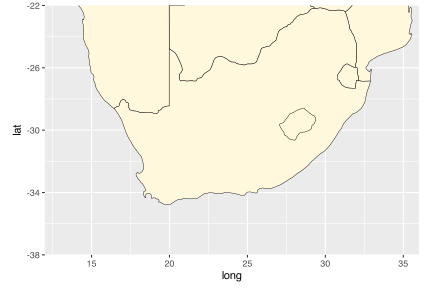

8. Mapping with style
Turning up the style
![]()
“How beautiful the world was when one looked at it without searching, just looked, simply and innocently.”
— Hermann Hesse, Siddartha
“You can’t judge a book by it’s cover but you can sure sell a bunch of books if you have a good one.”
— Jayce O’Neal
Now that we have learned the basics of creating a beautiful map in ggplot2 it is time to look at some of the more particular things we will need to make our maps extra stylish. There are also a few more things we need to learn how to do before our maps can be truly publication quality.
If we have not yet loaded the tidyverse let’s do so.
THIS PAGE IS NOT DSPLAYING THE OUTPUT OF CODE AT PRESENT DUE TO AN UPDATE OF THE SF PACKAGE THAT CAUSED IT TO BREAK. I WILL ENABLE THE OUTPUT AGAIN ONCE THE AUTHORS HAVE CORRECTED THEIR CODE
1 Default maps
In order to access the default maps included with the tidyverse we will use the function borders().
ggplot() +
borders(col = "black", fill = "cornsilk", size = 0.2) + # The global shape file
coord_equal() # Equal sizing for lon/lat 
Jikes! It’s as simple as that to load a map of the whole planet. Usually we are not going to want to make a map of the entire planet, so let’s see how to focus on just the area around South Africa.
sa_1 <- ggplot() +
borders(size = 0.2, fill = "cornsilk", colour = "black") +
coord_equal(xlim = c(12, 36), ylim = c(-38, -22), expand = 0) # Force lon/lat extent
sa_1
That is a very tidy looking map of South(ern) Africa without needing to load any files.
2 Specific labels
A map is almost always going to need some labels and other visual cues. We saw in the previous section how to add site labels. The following code chunk shows how this differs if we want to add just one label at a time. This can be useful if each label needs to be different from all other labels for whatever reason. We may also see that the text labels we are creating have \n in them. When R sees these two characters together like this it reads this as an instruction to return down a line. Let’s run the code to make sure we see what this means.
3 Scale bars
With our fancy labels added, let’s insert a scale bar next. There is no default scale bar function in the tidyverse, which is why we have loaded the ggsn package. This package is devoted to adding scale bars and North arrows to ggplot2 figures. There are heaps of options so we’ll just focus on one of them for now. It is a bit finicky so to get it looking exactly how we want it requires some guessing and checking. Please feel free to play around with the coordinates below. We may see the list of available North arrow shapes by running northSymbols().
sa_3 <- sa_2 +
scalebar(x.min = 22, x.max = 26, y.min = -36, y.max = -35, # Set location of bar
dist = 200, dist_unit = "km", height = 0.3, st.dist = 0.8, st.size = 4, # Set particulars
transform = TRUE, border.size = 0.2, model = "WGS84") + # Set appearance
north(x.min = 22.5, x.max = 25.5, y.min = -33, y.max = -31, # Set location of symbol
scale = 1.2, symbol = 16)
sa_34 Session info
installed.packages()[names(sessionInfo()$otherPkgs), "Version"]R> ggsn scales lubridate forcats stringr dplyr purrr readr
R> "0.5.0" "1.2.1" "1.9.2" "1.0.0" "1.5.0" "1.1.1" "1.0.1" "2.1.4"
R> tidyr tibble ggplot2 tidyverse
R> "1.3.0" "3.2.1" "3.4.1" "2.0.0"Reuse
Citation
@online{smit2021,
author = {Smit, AJ},
title = {8. {Mapping} with Style},
date = {2021-01-01},
url = {https://tangledbank.netlify.app/BCB744/intro_r/08-mapping_style.html},
langid = {en}
}